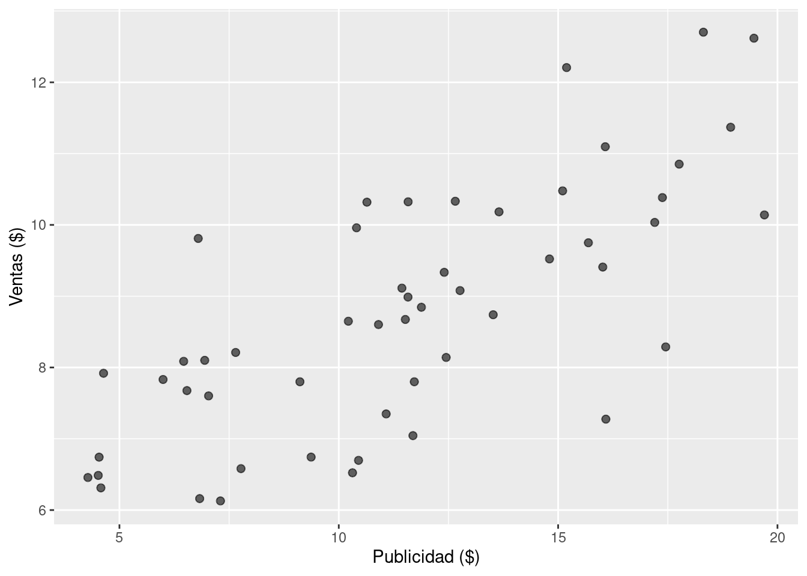
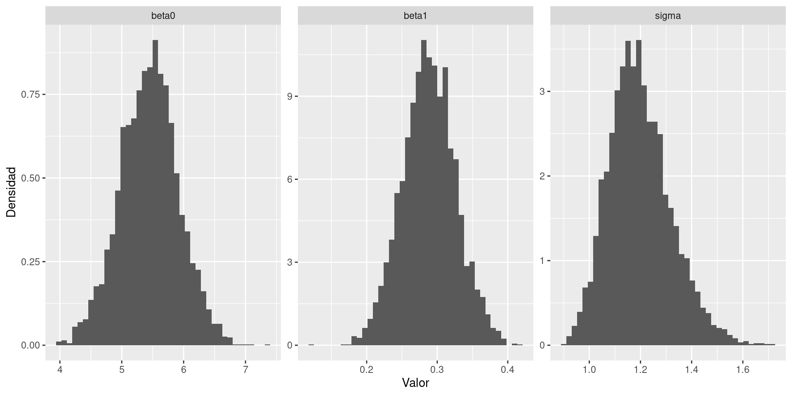
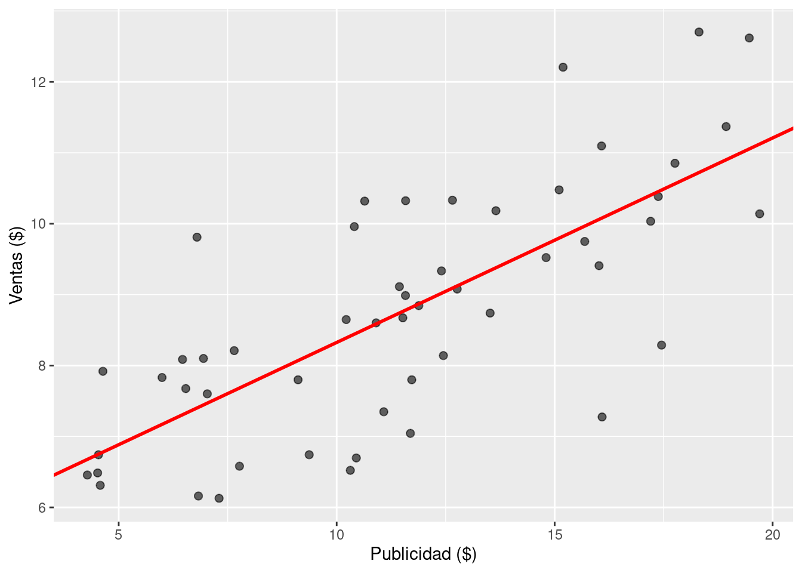
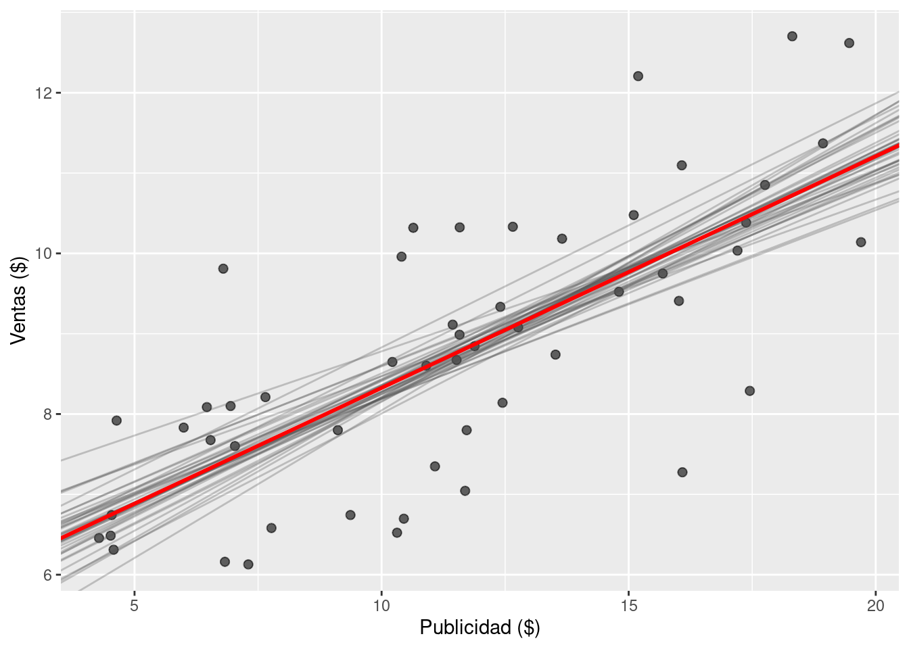
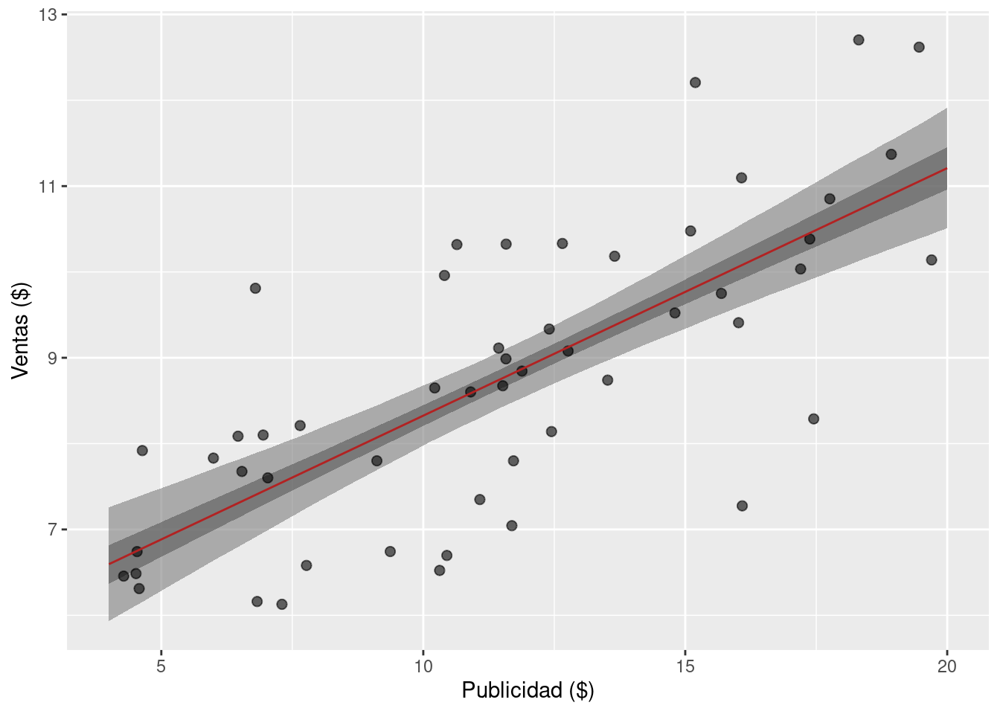
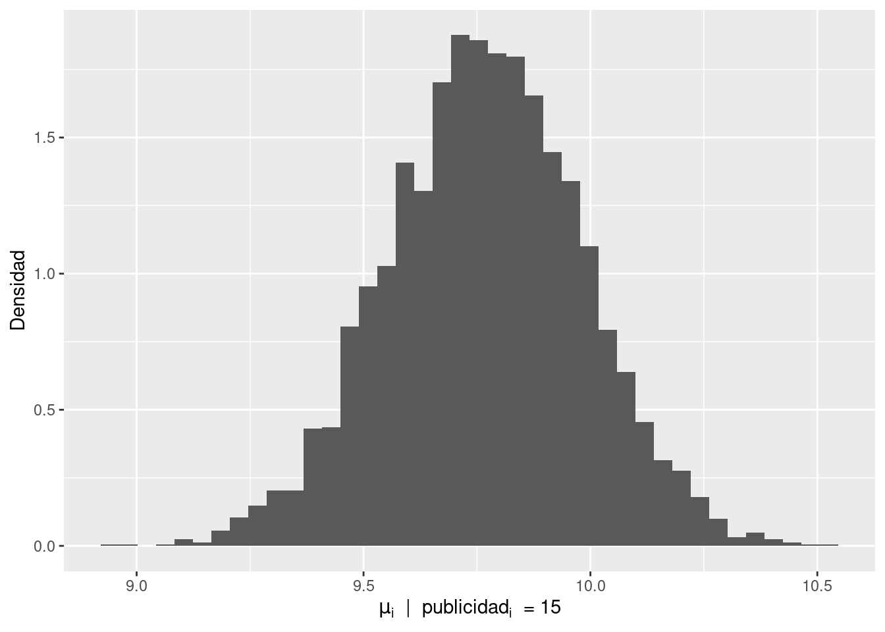
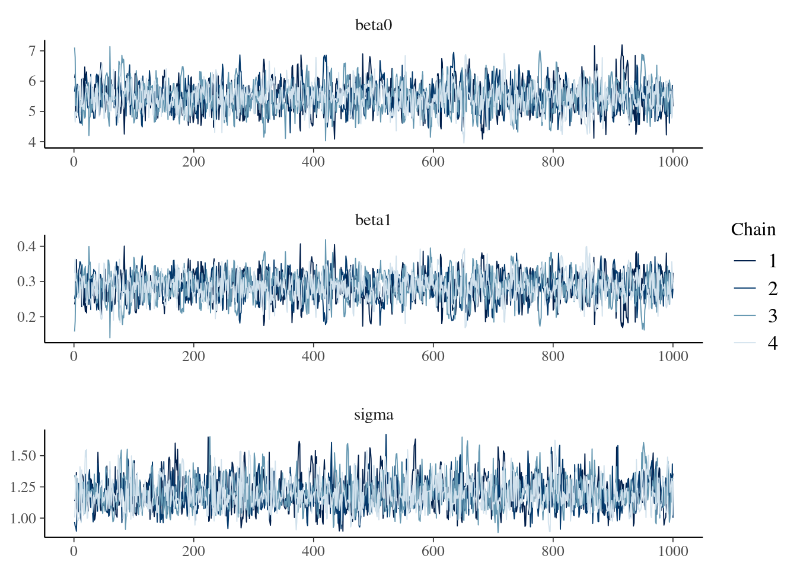

library(dplyr)
library(ggplot2)
library(readr)
library(rstan)14 - Regresión lineal con {RStan}
El siguiente programa muestra el código necesario para con R los ejercicios Mi primer regresión bayesiana y Mejorando mi regresión bayesiana de la Práctica 4.
En primer lugar, se cargan librerías necesarias.
Luego se leen y visualizan los datos.
# Leer los datos desde el repositorio
df_sales <- read_csv(
"https://raw.githubusercontent.com/estadisticaunr/estadistica-bayesiana/main/datos/sales.csv"
)
# Explorar los datos
ggplot(df_sales) +
geom_point(aes(x = x, y = y), alpha = 0.6, size = 2) +
labs(x = "Publicidad ($)", y = "Ventas ($)")
Se crea el siguiente modelo de regresión lineal bayesiana: \[ \begin{aligned} \text{ventas}_i &\sim \text{Normal}(\mu_i, \sigma^2) \\ \mu_i &= \beta_0 + \beta_1 \text{publicidad}_i \\ \end{aligned} \]
donde los parámetros \(\beta_0\), \(\beta_1\) y \(\sigma\) siguen distribuciones a priori uniformes. El programa de Stan para implementar el modelo es el siguiente:
data {
int<lower=0> N; // Cantidad de observaciones
vector[N] x; // Valores de la variable predictora
vector[N] y; // Valores de la variable respuesta
}
parameters {
real beta0; // Intercepto
real beta1; // Pendiente
real<lower=0> sigma; // Desvio estándar del error
}
model {
y ~ normal(beta0 + beta1 * x, sigma);
}Ahora se crea una lista con los datos para el modelo y se obtienen muestras del posterior utilizando la función stan().
stan_data <- list(
N = nrow(df_sales), # Cantidad de observaciones
x = df_sales$x, # Publicidad
y = df_sales$y # Ventas
)
ruta_modelo <- here::here(
"recursos", "codigo", "stan", "regresion_lineal", "01_modelo.stan"
)
stan_model <- stan(
file = ruta_modelo, # Ubicación del archivo con el codigo del modelo en Stan
chains = 4, # Cantidad de cadenas
data = stan_data, # Datos
refresh = 0, # No mostrar mensajes del sampler
seed = 121195 # Para que el resultado sea reproducible
)Al imprimir el objeto que devuelve stan() se puede encontrar un resumen del posterior, incluyendo medidas de diagnóstico como el tamaño de muestra efectivo y \(\hat{R}\).
stan_modelInference for Stan model: anon_model.
4 chains, each with iter=2000; warmup=1000; thin=1;
post-warmup draws per chain=1000, total post-warmup draws=4000.
mean se_mean sd 2.5% 25% 50% 75% 97.5% n_eff Rhat
beta0 5.44 0.01 0.47 4.50 5.13 5.45 5.75 6.37 1326 1
beta1 0.29 0.00 0.04 0.21 0.26 0.29 0.31 0.36 1344 1
sigma 1.20 0.00 0.12 0.99 1.11 1.19 1.27 1.46 1956 1
lp__ -34.53 0.03 1.19 -37.50 -35.10 -34.23 -33.63 -33.13 1204 1
Samples were drawn using NUTS(diag_e) at Tue Jun 4 19:36:47 2024.
For each parameter, n_eff is a crude measure of effective sample size,
and Rhat is the potential scale reduction factor on split chains (at
convergence, Rhat=1).Para continuar explorando el posterior y calcular cantidades de interés, conviene trabajar con las muestras en un data.frame. Para ello resulta fundamental la función extract() que extrae las muestras del posterior y las devuelve en una lista.
df_draws_1 <- as.data.frame(extract(stan_model))
head(df_draws_1) beta0 beta1 sigma lp__
1 5.702895 0.2692620 1.285523 -33.66168
2 5.244717 0.2905809 1.244286 -33.74537
3 6.403328 0.2233219 1.134279 -35.57386
4 5.143467 0.3438567 1.300885 -36.32171
5 5.572931 0.3111867 1.087404 -36.86876
6 5.492896 0.2769519 1.287901 -33.67864Lo siguiente es un enfoque posible, aunque bastante manual, para graficar los posteriors marginales de los parámetros del modelo.
df_draws_long_1 <- df_draws_1 |>
select(beta0, beta1, sigma) |>
tidyr::pivot_longer(c("beta0", "beta1", "sigma"), names_to = "parametro")
ggplot(df_draws_long_1) +
geom_histogram(aes(x = value, y = after_stat(density)), bins = 40) +
facet_wrap(~ parametro, scales = "free") +
labs(x = "Valor", y = "Densidad")
Un primer paso en el análisis de un modelo lineal simple es visualizar la recta de regresión estimada.
# Calcular la media a posteriori del intercepto y la pendiente
intercept_mean <- mean(df_draws_1$beta0)
slope_mean <- mean(df_draws_1$beta1)
# Utilizar estos dos valores para graficar la media de la recta de regresión
ggplot(df_sales) +
geom_point(aes(x = x, y = y), alpha = 0.6, size = 2) +
geom_abline(
intercept = intercept_mean,
slope = slope_mean,
linewidth = 1,
color = "red"
) +
labs(x = "Publicidad ($)", y = "Ventas ($)")
Pero no hay que olvidar que estamos trabajando con un modelo bayesiano. Por lo tanto, más que visualizar una recta basada en la media de las distribuciones marginales, es mejor visualizar las rectas asociadas a muestras del posterior. Esto también brinda una idea de la variabilidad en la estimación de la recta.
ggplot(df_sales) +
geom_point(aes(x = x, y = y), alpha = 0.6, size = 2) +
geom_abline(
aes(intercept = beta0, slope = beta1),
alpha = 0.3,
color = "gray30",
1 data = df_draws_1[sample(nrow(df_draws_1), 40), ]
) +
geom_abline(
intercept = intercept_mean,
slope = slope_mean,
linewidth = 1,
color = "red"
) +
labs(x = "Publicidad ($)", y = "Ventas ($)")- 1
-
Se utiliza
sample(nrow(df_draws_1), 40)para seleccionar 40 muestras del posterior al azar. La figura resultaría muy difícil de leer si se intenta visualizar las rectas asociadas a muchas más muestras.

También es posible utilizar todas las muestras del posterior para obtener bandas de credibilidad para la recta de regresión. A continuación, se obtiene la distribución condicional de \(\mu_i\) para valores de \(\text{ventas}_i\) en una grilla que cubre el rango de valores observados. A partir de esas muestras, se calculan intervalos de credibilidad.
1x_grid <- seq(4, 20, length.out = 100)
2mu_matrix <- matrix(nrow = 4000, ncol = 100)
for (i in seq_along(x_grid)) {
3 mu_matrix[, i] <- df_draws_1$beta0 + df_draws_1$beta1 * x_grid[i]
}
4mu_mean <- apply(mu_matrix, 2, mean)
5mu_qts <- t(apply(mu_matrix, 2, function(x) quantile(x, c(0.025, 0.975))))
6mu_qts2 <- t(apply(mu_matrix, 2, function(x) quantile(x, c(0.25, 0.75))))
# Finalmente, se lamacenan los valores calculados en un data frame
data_mu <- data.frame(
x = x_grid,
y = mu_mean,
lower_95 = mu_qts[, 1],
upper_95 = mu_qts[, 2],
lower_50 = mu_qts2[, 1],
upper_50 = mu_qts2[, 2]
)
head(data_mu)- 1
- Se crea la grilla de valores para \(\text{ventas}\).
- 2
- Se crea una matriz con tantas filas como muestras del posterior y tantas columnas como cantidad de valores en la grilla. Acá almacenamos los valores de \(\mu_i\).
- 3
- Para cada valor de la grilla, se obtiene la distribución condicional de \(\mu_i\).
- 4
- Se calcula la media a posteriori de \(\mu_i\) para cada valor en la grilla.
- 5
- Se calculan los percentiles de \(\mu_i\) que se corresponden con un intervalo de colas iguales del 95%.
- 6
- Se calculan los percentiles de \(\mu_i\) que se corresponden con un intervalo de colas iguales del 50%.
x y lower_95 upper_95 lower_50 upper_50
1 4.000000 6.595824 5.934309 7.258752 6.369222 6.815834
2 4.161616 6.642427 5.990035 7.294831 6.418976 6.860088
3 4.323232 6.689029 6.046097 7.330238 6.468999 6.903103
4 4.484848 6.735631 6.102488 7.366296 6.520079 6.946529
5 4.646465 6.782233 6.158451 7.402764 6.570256 6.989935
6 4.808081 6.828835 6.215976 7.439382 6.620805 7.033574Las bandas de credibilidad se construyen usando geom_ribbon de {ggplot2}.
ggplot(df_sales) +
geom_ribbon(
aes(x, ymin = lower_95, ymax = upper_95),
fill = "grey50",
alpha = 0.6,
data = data_mu
) +
geom_ribbon(
aes(x, ymin = lower_50, ymax = upper_50),
fill = "grey35",
alpha = 0.6,
data = data_mu
) +
geom_point(aes(x = x, y = y), alpha = 0.6, size = 2) +
geom_line(
aes(x, y),
color = "firebrick",
data = data_mu
) +
labs(x = "Publicidad ($)", y = "Ventas ($)")
Finalmente, se muestra como visualizar la distribución condicional de \(\mu_i\) para un valor particular de la variable predictora \(\text{ventas}\).
publicidad <- 15
mu <- df_draws_1$beta0 + df_draws_1$beta1 * publicidad
data.frame(mu = mu) |>
ggplot() +
geom_histogram(aes(mu, y = after_stat(density)), bins = 40) +
labs(
x = expression(mu[i] ~ " | " ~ publicidad[i] ~ " = 15"),
y = "Densidad"
)
Ahora se muestra como utilizar distribuciones a priori no uniformes para los parámetros del modelo. El modelo se describe: \[ \begin{aligned} \text{ventas}_i &\sim \text{Normal}(\mu_i, \sigma^2) \\ \mu_i &= \beta_0 + \beta_1 \text{publicidad}_i \\ \beta_0 &\sim \text{Normal}(\overline{\text{ventas}}, 10^2) \\ \beta_1 &\sim \text{Normal}(0, 0.5^2) \\ \sigma &\sim \text{Normal}^+(5) \end{aligned} \]
y el programa de Stan que lo implementa es el siguiente
data {
int<lower=0> N; // Tamaño de muestra
vector[N] x; // Valores del predictor
vector[N] y; // Valores de la respuesta
real beta0_mu; // Media del prior del intercepto
}
parameters {
// Primero se declaran los parámetros
real beta0;
real beta1;
real<lower=0> sigma;
}
model {
// Luego se especifican sus priors
beta0 ~ normal(beta0_mu, 10); // Acá se pasa el valor de la media
beta1 ~ normal(0, 0.5);
sigma ~ normal(0, 5); // Es una 'media-normal' dada la cota inferior arriba
// Likelihood
y ~ normal(beta0 + beta1 * x, sigma);
}La estructura del código para ajustar el modelo es idéntica a la utilizada anteriormente. La única diferencia es que debemos pasar el valor de la media del prior del intercepto \(\beta_0\).
stan_data <- list(
N = nrow(df_sales), # Cantidad de observaciones
x = df_sales$x, # Publicidad
y = df_sales$y, # Ventas
beta0_mu = mean(df_sales$y) # Media del prior del intercepto
)
ruta_modelo <- here::here(
"recursos", "codigo", "stan", "regresion_lineal", "02_modelo_con_priors.stan"
)
stan_model <- stan(
file = ruta_modelo, # Ubicación del archivo con el codigo del modelo en Stan
chains = 4, # Cantidad de cadenas
data = stan_data, # Datos
refresh = 0, # No mostrar mensajes del sampler
seed = 121195 # Para que el resultado sea reproducible
)Se puede ver el resumen del posterior
stan_modelInference for Stan model: anon_model.
4 chains, each with iter=2000; warmup=1000; thin=1;
post-warmup draws per chain=1000, total post-warmup draws=4000.
mean se_mean sd 2.5% 25% 50% 75% 97.5% n_eff Rhat
beta0 5.47 0.01 0.47 4.59 5.14 5.45 5.78 6.45 1537 1
beta1 0.29 0.00 0.04 0.21 0.26 0.29 0.31 0.36 1631 1
sigma 1.20 0.00 0.12 0.99 1.11 1.19 1.27 1.47 1810 1
lp__ -34.82 0.03 1.24 -37.88 -35.41 -34.50 -33.88 -33.37 1421 1
Samples were drawn using NUTS(diag_e) at Tue Jun 4 19:37:46 2024.
For each parameter, n_eff is a crude measure of effective sample size,
and Rhat is the potential scale reduction factor on split chains (at
convergence, Rhat=1).y también se podrían crear visualizaciones como las anteriores utilizando el mismo código.
Se recomienda echar un vistazo a las funciones disponibles en la librería {bayesplot} aquí. Por ejemplo, mcmc_trace(), que permite obtener un traceplot que sirve para evaluar la convergencia y mezcla de las cadenas.
library(bayesplot)
mcmc_trace(
stan_model,
pars = c("beta0", "beta1", "sigma"),
facet_args = list(nrow = 3)
)